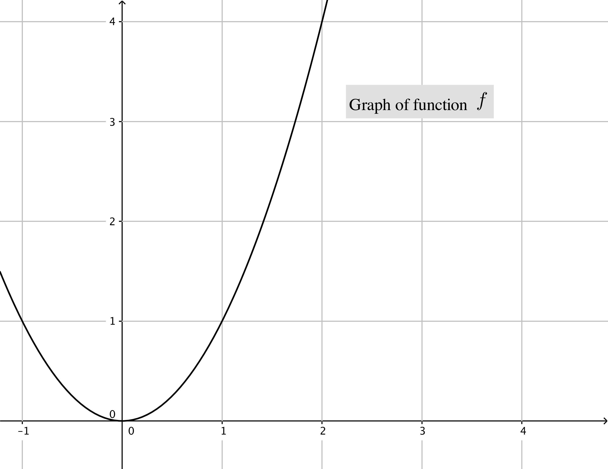
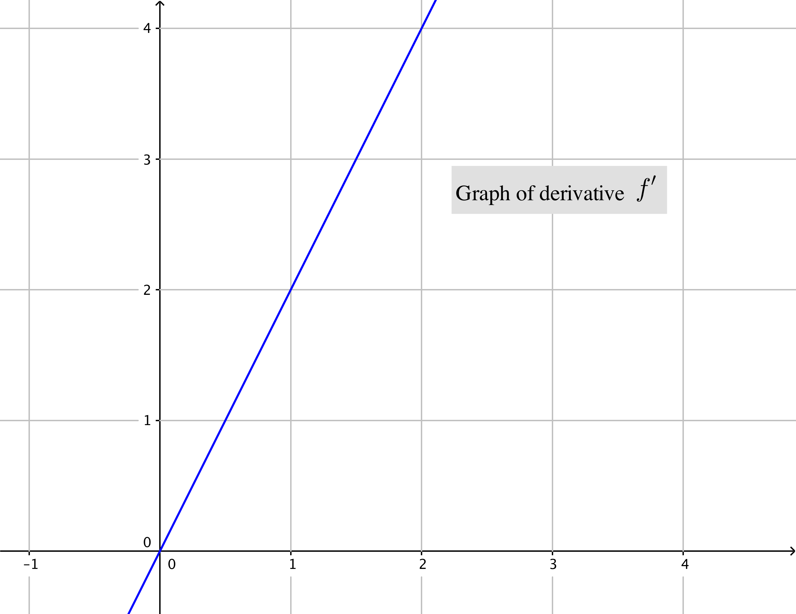
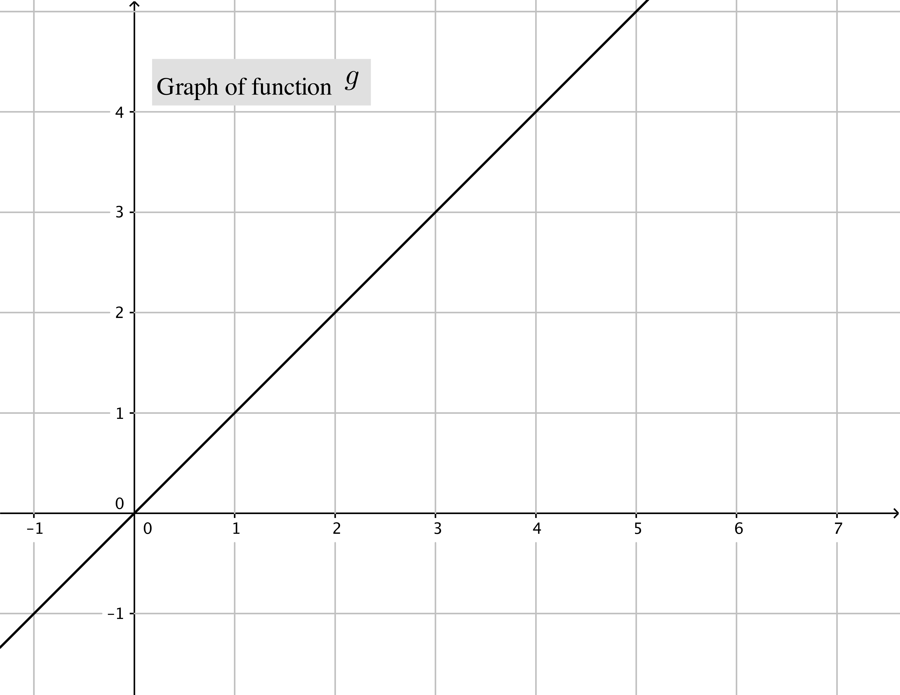

Use the given graphs of \(f\) and \(g\) and their accompanying derivatives to answer the following questions.



- (a)
- Write an equation for the tangent line to \(f\) at \(x=2\).
- (b)
- Draw the graph of \(g'\)
- (c)
- Compute the value of the \((5f+3g)'(2)\).
- (d)
- Find the equation of the tangent line to the graph of \((5f+3g)\) at the point where \(x=2\).
- (e)
- Use the given graph of \(f'\) and \(g'\) to find the following:
- (i)
- A formula for \(f'\)
- (ii)
- A formula for \(g'\)
- (f)
- Find the expression for \((5f+3g)'(x)\).